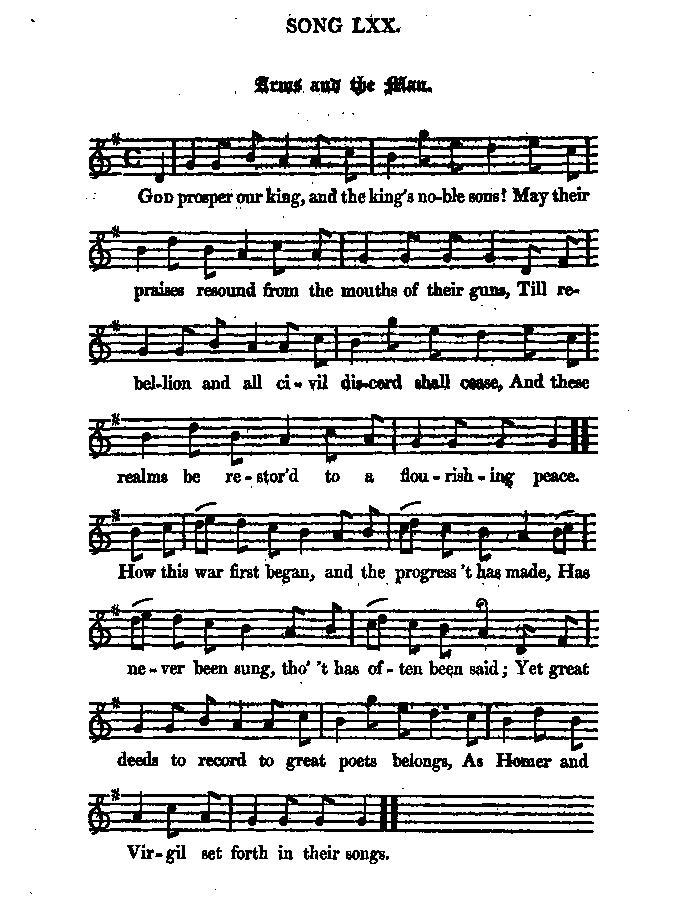
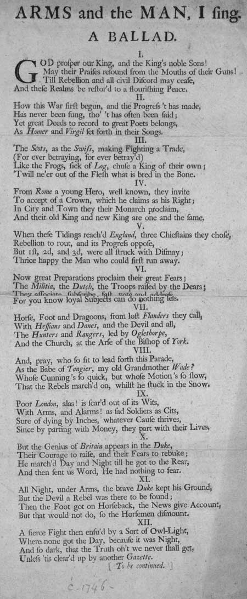
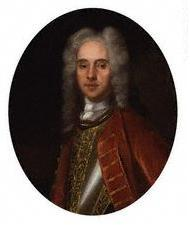

Of Arms and the Man I sing
Je chante les armes et l'homme
The Battle of Falkirk - La bataille de Falkirk
Anti-Jacobite Broadside Ballad, published in two parts 1746, after Culloden
Une charge anti-Jacobite diffusée, en deux parties, en 1746, après Culloden
Tune - Mélodie"Arms and the Man"
from Hogg's "Jacobite Relics", 2nd Series N° 70
Sequenced by Christian Souchon


|
OF ARMS AND THE MAN I SING. [1] A BALLAD. I. GOD prosper our King and the King's noble Sons! May their Praises resound from the Mouths of their Guns! Till Rebellion and all civil Discord may cease, And these Realms be restor'd to a flourishing Peace. II. How this War first begun, and the Progress 't has made, Has never been sung, though 't has often been said ; Yet great Deeds to record to great Poets belongs, As Homer and Virgil set forth in their Songs. III. The Scots, as the Swiss, making Fighting a Trade, (For ever betraying, for ever betrayed) Like the Frogs, sick of Log, chose a King of their own ; 'Twill ne'er out of the Flesh what is bred in the Bone. IV. From Rome a young Hero, well known, they invite To accept of a Crown, which he claims as his Right; In City and Town they their Monarch proclaim, And their old King and new King are one and the fame. V. When these Tidings reached England, three Chieftains they chose, Rebellion to rout, and its Progress oppose. But 1st, 2d, and 3rd, were all struck with Dismay; Thrice happy the Man who could first run away. [2] VI. Now great Preparations proclaim their great Fears; The Militia, the Dutch, the Troops raised by the Dears; They associate, subscribe fast vote and address For you know loyal Subjects can do nothing less. VII. Horse, Foot and Dragoons, from lost Flanders they Call, With Hessians and Danes, and the Devil and all, The Hunters and Rangers, led by Oglethorpe, And the Church, at the Arse of the Bishop of York. [3] VIII. And, pray, who so fit to lead forth this Parade, As the Babe of Tangier, my old Grandmother Wade? [4] Whose Cunning's so quick, but whose Motion's so slow, That the Rebels marched on, whilst he stuck in the Snow. IX. Poor London, alas! is scared out of its Wits, With Arms, and Alarms! As fad Soldiers, as Cits, Sure of dying by Inches, whatever Cause thrives, Since by parting with Money, they part with their Lives. [5] X. But the Genius of Britain appears in the Duke, Their Courage to raise, and their Fears to rebuke; He marched Day and Night till he got to the Rear, And then sent us Word, He had nothing to fear. XI. All Night, under Arms, the brave Duke kept his Ground, But the Devil a Rebel was there to be found ; Then the Foot got on Horseback, the News give Account, But that would not do, so the Horsemen dismount, XII. A fierce Fight then ensued by a Sort of Owl-Light, Where none got the Day, because it was Night, And so dark, that the Truth on't we never shall get, Unless 'tis cleared up by another Gazette. [ To be continued. '] |


 |
JE CHANTE LES ARMES ET L'HOMME. [1] BALLADE I. DIEU bénisse le roi, ses fils et sa maison! Que leur louange tonne au son de leurs canons! Jusqu'à ce qu'aient cessé la discorde et la guerre, Que ces royaumes soient paisibles et prospères. II. L'origine de cette guerre et son parcours N'inspirèrent nul chant, en dépit des discours; Un grand poète seul sait chanter de hauts faits, Comme Homère et Virgile en leurs chants l'affirmaient. III. Pour le Suisse et le Scot combattre est un commerce (Toujours prompts à trahir, on les trahit sans cesse), Grenouilles de la fable, ils se cherchent un roi, Prétextant que n'est chair ce l'os engendra. IV. De Rome ils font venir un éphèbe fameux: "La Couronne t'attend, celle de tes aïeux "; En tous lieux ils proclament ce monarque et font Au vieux, au jeune roi la même ovation. V. Lorsqu'Albion l'apprend, trois chefs elle dépêche, Pour s'opposer au mal de peur qu'il ne progresse. Mais les trois, tour à tour, sont frappés de stupeur; La fuite est pour plus d'un le moindre des malheurs. [2] VI. La manuvre est à la mesure des alarmes: Milice, Germains et Français avec leurs armes; S'empressent de leur apporter, voix et soutien. Pour de loyaux sujets pouvait-on faire moins?. VII. De la Flandre perdue, cavaliers, fantassins, Dragons, Hessois, Danois et le diable et son train Affluent et l'on voit même accourir Oglethorpe, Et des clercs rameutés par l'évêque de York. [3] VIII. Qui donc a-t-on choisi face à cette Parade? Le "gamin de Tanger", l'antique aïeule Wade! [4] Si prompt à calculer, mais si lent à marcher Que, quand le Scot avance, il demeure embourbé. IX. Londres, même, devient la proie de la terreur, Chacun mourra, c'est sûr, quel que soit le vainqueur, Par les armes ou non, civil comme soldat, Car perdre son argent équivaut au trépas. [5] X. Mais le génie d'Albion dans Cumberland s'incarne. Il lui rend son courage et chasse ses alarmes. C'est à marches forcées qu'il rejoint leurs arrières. Et c'en est bientôt fait des craintes passagères XI. En armes jusqu'au jour, le Duc tient le terrain, Mais le diable au rebelle apporte un bref soutien . Et l'on voit tour à tour et fantassins en selle, Et cavaliers à pied, au dire des nouvelles XII. Le féroce combat qui s'achève avec l'aube Ne connaît nul vainqueur, la nuit en est la cause. Si noire qu'il nous faut, pour savoir qui dit vrai, Attendre qu'une autre gazette l'ait contée. (A suivre) Traduction: Christian Souchon (c) 2007 |
|
Hogg's Jacobite Relics Second Series contain the sequel of this broadside ballad (2nd Battle of Carlisle, Battle of Falkirk), as well as the tune to it. 1. Encore! Now let's have th' other touch of the song, For singing can ne'er put things in the wrong. See, ha! How the rebels run off from Carlisle! Our duke takes a snuff, and must stop for a while. Now, that England is free, let the deil take the Scots, Who hate great Hanover, and hatch those maimed plots; The dirty posteriors of this our realm, Who deserves to be rumped by all those at the helm. 2. Great William posts back to his royal papa, And sends them down Hawley to hang them up a'. Brave Hawley advances to fight at Falkirk, But a Jacobite storm sends him back with a jirk. He lost but his cannon, his camp, and his men, All which the brave duke can soon get again. See, he comes in four days, he never will yield ; Should the living run off, yet the dead keep the field. 3. Now great Hawley led on, with great Husk at his tail, And the duke in the centre, this sure cannot fail: Horse, foot, and dragoons; pell-mell, knock them down ; But, G-d-zoons, where are they ? G-d damn them, they're gone. By a Harlequin trick the vile dogs run away, Fifty miles in a morning, to th' other side Tay ; Then in their strong holds they laugh us to scorn. Such scurvy damn'd usage is not to be borne. 4. Tis true th' affair's over, the business is done, But we've miss'd all our hacking and hewing for fun, At least for this bout ; for they'll soon be surrounded ; Then how will the French and the pope be confounded ? We must march then to Stirling, to Perth, Aberdeen, And God knows where next, ere these scoundrels be seen. Then pluck up your courage, brave Englishmen all; The Scots, as the weakest, must go to the wall. 5. Claymores long adieu, now your edge is unsteel'd; Ye Camerons, no more you such weapons must wield. The duke says the word, and the clans are undone: When your mountains down tumble, every soul of you 's gone. Then farewell McPhersons, McFlegs, and McPhuns, McDonalds, McDrummonds, McDevils, McDuns, McDotards, McWades, and McMarches, McRuns, McGeordies, McYeltochs, McRumps, and McPunns. Source: "The Jacobite Relics of Scotland, being the Songs, Airs and Legends of the Adherents to the House of Stuart" collected by James Hogg, published in Edinburgh by William Blackwood in 1819. |
Les "Reliques Jacobites", deuxième série, de Hogg comportent la suite annoncée sur la feuille volante (2ème bataille de Carlisle, bataille de Falkirk), ainsi que la mélodie de ce chant. 1. Donc, vous voulez savoir la suite de ce chant. Chanter ne peut pas nuire aux affaires des gens. Mais voyez! Les rebelles ont dû fuir Carlisle! Notre Duc, en prisant, attendra qu'ils s'en aillent. Désormais l'Angleterre est libérée des Scots Qui détestent Hanovre et font mille complots. Les postérieurs crottés de ce royaume en berne Vont être bottés par tous ceux qui nous gouvernent. 2. Le grand Guillaume écrit à son royal papa Puis pour les pendre tous envoie Hawley là-bas. Hawley décide qu'a Falkirk il va combattre Mais un assaut des Jacobites l'en écarte. Il abandonna tout: canons, camp et soldats Que l'intrépide duc bientôt récupéra, Sans jamais reculer, en quatre jours, tout ronds. Les vivants peuvent fuir, les morts eux tiennent bon. 3. Le grand Hawley devant, le grand Husk à l'arrière, Et, au centre, le Duc pour assurer l'affaire, Fantassins, cavaliers viennent les attaquer. Mais où sont-ils, grand Dieu! Mais où sont-ils passés? Encore un tour pendable de ces maudits chiens: Cinquante lieues qu'ils ont franchies en un matin. Au-delà de la Tay, derrière leurs remparts, Ils nous narguent. Punissons-les, et sans retard! 4. A nos fins nous parvînmes sans livrer bataille. Mais que n'avons-nous pu rosser cette racaille; Pour cette fois, du moins. Car ils sont encerclés. Comment apprendre à vivre au Pape et aux Français? Il faut marcher sur Perth, Stirling et Aberdeen, Dieu sait encor jusqu'où, pour traquer la vermine. Allons donc! Hauts les curs, mes courageux Anglais! Vous êtes les plus forts! Vous vaincrez l'Ecossais! 5. Ils sont émoussés vos claymores, vos poignards! Camerons, vous pouvez tous les mettre au rancard. Un mot du Duc et vos clans seront déconfits. Vos monts vont s'écrouler et vos âmes aussi. Adieu donc McPherson, McTruc et McMachin, McDonald, McDrummond, McDiable, McEt-Son-train, McGâteux et McWade, McMarchez, McCourez, McGeordie, McEn-joue, McBoum et ... McChabées! (Trad. Christian Souchon(c)2009) |
|
(1) "Of arms and the man I sing...": Opening line of Virgil's epic poem "The Aeneid". "This cutting ballad was written sometime after the Battle of Culloden in 1746. It savagely criticises the Jacobites and their supporters, and praises King George II and his son, the Duke of Cumberland, for their efforts to restore 'a flourishing peace' between Scotland and England. The Swiss, French, Danish, German and early American revolutionary, James Edward Oglethorpe (1696-1785, founder and early leader of the colony of Georgia) are also lambasted for their rebelliousness. Because of the overall tone of the piece, and the fact that it refers to, 'the Scots . . . (For ever betraying, for ever betray'd)', it is likely that this was not composed by a Scot." Source: "National Library of Scotland".
(2) The three generals who were defeated by the Jacobites were: (3) The (Arch)bishop of York: Charlie's brother Henry (1725-1807).
(4) WADE, GEORGE (1673-1748)
(5) Audiences at the Drury Lane and Covent Garden theatres in London sang for the first time on 28th September 1745, as news came of the Jacobite victory at Prestonpans the 3d stanza of 'God save the King'. |
(1) "Je chante les armes et l'homme...": début de l'Enéide de Virgile. "Cette incisive ballade fut écrite peu après la bataille de Culloden en 1746. Elle critique impitoyablement les Jacobites et leurs partisans et fait l'éloge du roi George II et de son fils, le Duc de Cumberland, pour leurs efforts en vue de restaurer 'une paix prospère' entre l'Ecosse et l'Angleterre. Les Suisses, Français, Danois, Allemands et le champion de la révolution américaine naissante, James Edward Oglethorpe (1696 -1785, fondateur et l'un des premiers dirigeants de la colonie de Géorgie), sont aussi brocardés pour leur soutien à la rébellion. Le ton général de la pièce et le fait qu'elle parle des Ecossais en des termes accusateurs ('car à trahir toujours on est toujours trahi'), laissent supposer qu'elle ne fut pas composée par un Ecossais." Source: "National Library of Scotland".
(2) Les trois généraux qui furent battus par les Jacobites sont: (3) L'(arch)evêque de York: Le frère de Charlie, Henry (1725 - 1807).
(4) WADE, GEORGE (1673-1748)
(5) Le public des théâtres Drury Lane et Covent Garden de Londres chantèrent pour la première fois, le 28 septembre 1745, en apprenant la nouvelle de la victoire Jacobite à Prestonpans, la 3ème strophe du 'God save the King'. |